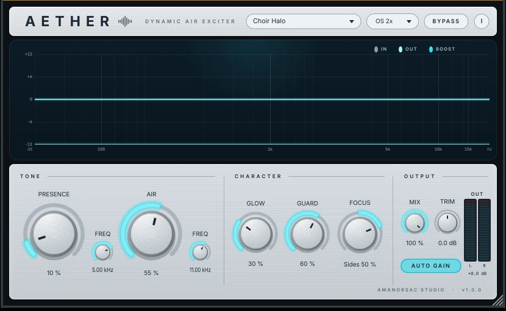

Dynamic Air Exciter
Air you can aim.
Tunable presence and air bands, a real harmonic exciter, and a sibilance-aware limiter that keeps the sparkle and drops the harshness. Point the air at the centre for a lead vocal, or out to the sides for a choir.
Price announced shortly · make an account now and it lands in My Apps the day it goes on sale

The interface, at rest · the analyser draws the boost curve once audio is running through it
Hear it first
The same three seconds, off and on, switching the instant you press it — no reload, no download, and level-matched so that brighter never gets to masquerade as better. Space or Enter plays; the arrow keys switch.
Every pair is RMS-matched · recorded through AETHER 1.0.0 · no other processing
The five controls
A wide, musical lift between 1.5 and 8 kHz. Bite and articulation. Tunable, not fixed at a frequency somebody else chose.
A high shelf with a soft resonant corner, 6 to 18 kHz. Silk and sparkle. Also tunable, so it sits where the source needs it.
Harmonic excitation. It generates top end that was never in the recording, which is what rescues a dull vocal or a distant choir mic. An EQ can only lift what is already there. This does not have that problem.
Watches the 5 to 9 kHz range and pulls back the boost, and only the boost, when it gets hot. The air stays. The sibilance does not.
Sweeps the air from the centre of the stereo image out to the sides. Centre for a lead vocal that has to stay put. Sides for pads, choir and width.
And under them: Mix for parallel blending, Auto Gain for loudness-matched comparison, 2× and 4× oversampling around the exciter, and a live analyser that draws exactly what is being added rather than a decorative animation.
Where it sits
Fresh Air is a good free plugin with a deliberately narrow design: two sliders, no decisions. This is the comparison for people who have hit the edge of that.
| Fresh Air | AETHER | |
|---|---|---|
| Bands | Two, fixed centres | Presence (1.5–8 kHz) and Air (6–18 kHz), both tunable |
| Harmonics | None — it is EQ | Asymmetric soft-saturation exciter, band-limited to the air region |
| Harshness control | None | Program-dependent reduction on the boost only, when 5–9 kHz gets hot |
| Stereo | L/R | Sweep the air from centre to sides |
| Level honesty | Trim | RMS-matched wet and dry, so brighter never masquerades as better |
| Aliasing | — | 2× and 4× oversampling around the exciter |
| Metering | None | Live in and out spectrum, boost curve, harshness lamp, output meters |
| Presets | None | Ten, named for the job |
Presets
Open one, and it is already doing something sensible to what you have. Nothing here needs learning before it is useful.
Lead vocals, close-mic'd. Presence forward, focus at the centre, guard doing the work on the esses.
What Focus was built for. Air swept to the sides so a wide source opens up without the middle getting brittle.
Glow rather than shelf, for the top octaves of a room-recorded piano.
Gentle across a group. Mix pulled back so it lifts rather than glazes.
Small numbers, oversampling up, auto gain on. The setting you audition rather than commit to.
Specifications
VST3 on Windows. VST3 and AU on macOS.
Windows 10 or 11, 64-bit.
macOS 10.13 or later. Universal — Intel and Apple silicon.
Any VST3 or AU host: Studio One, Ableton Live, Logic, Reaper, Cubase, FL Studio, and Pro Tools through a VST3 wrapper.
One self-contained installer. No .NET, no runtime download, no administrator rights. It installs per user and uninstalls cleanly from Apps & Features, leaving your presets where they are.
No iLok, no dongle, no subscription. A key, two computers, and thirty days offline at a stretch.
The Windows installer is not code-signed yet, so SmartScreen shows a blue box saying it protected your PC. That is Windows not recognising a new publisher, not Windows finding something wrong with the file.
Click More info, then Run anyway. We would rather tell you that here than have you meet it alone.
Coming
shortlyPrice announced soon
A single perpetual licence, activated from inside the plugin, moved between machines by you whenever you need to. Make an account now and AETHER appears in your My Apps the day it goes on sale — with the key already waiting.
Create an account Hear it again